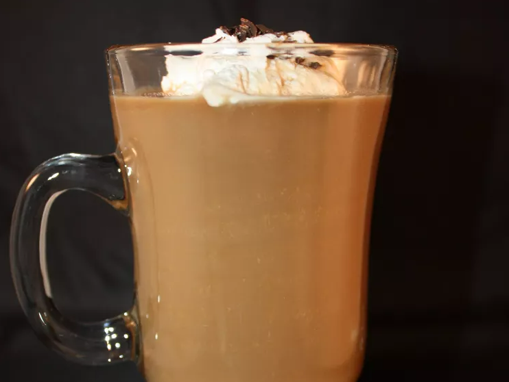

Irish Coffee

Description
EIrish coffee makes a delicious after-dinner cocktail. It's easy to make with freshly brewed coffee, Irish
whiskey, and whipped cream. It's traditionally sweetened with brown sugar but Irish cream liqueur adds that
little touch of luxury!
Ingredients
- 1 (1.5 fluid ounce) jigger Irish cream liqueur
- 1 (1.5 fluid ounce) jigger Irish whiskey
- 1 cup hot brewed coffee
- 1 tablespoon whipped cream
- 1 dash ground nutmeg
Steps
- PCombine Irish cream liqueur and Irish whiskey in a glass mug; pour in hot brewed coffee. Top with whipped
cream and a dash of nutmeg.
Homepage